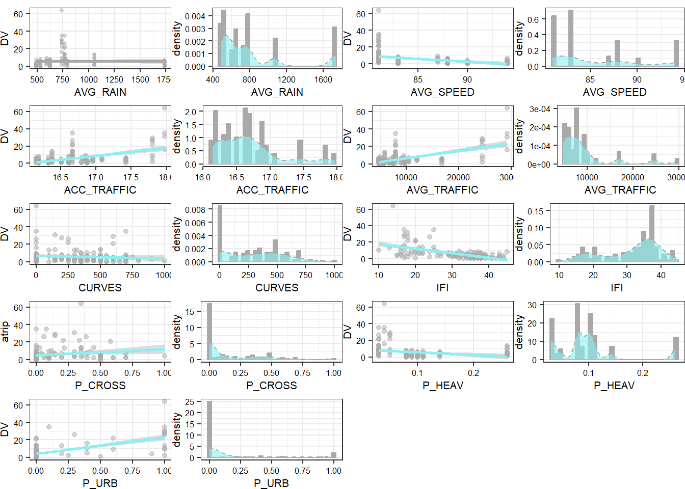

2 Exploratory Data Analysis
The dataset has 1 DV, 9 continuous and 2 categorical IVs (Table 2.1), Neither the DV, nor any of the continuous IVs are normally distributed (Figure 2.3).
| Variable | N | Mean | Std. Dev. | Min | Pctl. 25 | Pctl. 75 | Max |
|---|---|---|---|---|---|---|---|
| DV | 157 | 5.82 | 8.20 | 0.00 | 2.00 | 6.00 | 64.00 |
| AVG_RAIN | 157 | 811.10 | 399.48 | 490.00 | 530.00 | 793.00 | 1738.00 |
| AVG_SPEED | 157 | 85.31 | 4.52 | 81.00 | 81.00 | 88.00 | 94.00 |
| ACC_TRAFFIC | 157 | 16.68 | 0.46 | 16.15 | 16.32 | 16.85 | 17.97 |
| AVG_TRAFFIC | 157 | 9072.61 | 5555.74 | 4700.00 | 5600.00 | 9500.00 | 29200.00 |
| CURVES | 157 | 299.49 | 251.29 | 0.00 | 0.00 | 500.00 | 1000.00 |
| IFI | 157 | 31.27 | 8.34 | 10.00 | 25.00 | 37.00 | 45.00 |
| P_CROSS | 157 | 0.13 | 0.21 | 0.00 | 0.00 | 0.20 | 1.00 |
| P_HEAV | 157 | 0.10 | 0.06 | 0.03 | 0.08 | 0.11 | 0.26 |
| P_URB | 157 | 0.10 | 0.27 | 0.00 | 0.00 | 0.00 | 1.00 |
| CI | 157 | NA | NA | NA | NA | NA | NA |
| … gradient | 88 | NA | NA | NA | NA | NA | NA |
| … mix | 69 | NA | NA | NA | NA | NA | NA |
| CDR | 157 | NA | NA | NA | NA | NA | NA |
| … 0 | 57 | NA | NA | NA | NA | NA | NA |
| … 1 | 9 | NA | NA | NA | NA | NA | NA |
| … 2 | 38 | NA | NA | NA | NA | NA | NA |
| … 3 | 38 | NA | NA | NA | NA | NA | NA |
| … 4 | 15 | NA | NA | NA | NA | NA | NA |
2.1 Dependent variable
The dependent variable is a discrete response of counts. It is not normally distributed and it is right skewed (Figure 2.1). We rejected the null hypothesis that the DV has a Poisson distribution based on its high coefficient of variance (11.5) and the significance of its goodness of fit test for Poisson distribution (χ2(20)=784, p-value<.01).
Figure 2.1: DV Histogram and density plot
2.2 Categorical Variables
The categorical variables’ boxplots (Figure 2.2) show modest variations in the means of the DV among the different categories’ levels .
Figure 2.2: Boxplots of Categorical IVs
2.3 Continuous Variables
We have examined the bivariate relationship between the DV and each of the continuous IVs (Figure 2.3). IFI is the independent variable with the most linear relationship with DV.
Figure 2.3: Scatterplots and Histograms of Independent Variables
2.4 Correlation
Because most variables do not have a linear relationship with each other or with the DV, we have examined the correlation matrix of the variables under the Spearman method (Tables 2.2 and 2.3).
| DV | AVG_RAIN | AVG_SPEED | ACC_TRAFFIC | AVG_TRAFFIC | CURVES | IFI | P_CROSS | P_HEAV | P_URB | |
|---|---|---|---|---|---|---|---|---|---|---|
| DV | 1.00 | 0.33 | -0.54 | 0.35 | 0.35 | -0.04 | -0.59 | 0.32 | -0.33 | 0.42 |
| AVG_RAIN | 0.33 | 1.00 | -0.31 | 0.36 | 0.36 | 0.17 | -0.49 | 0.19 | 0.22 | 0.18 |
| AVG_SPEED | -0.54 | -0.31 | 1.00 | -0.13 | -0.13 | 0.21 | 0.66 | -0.17 | 0.29 | -0.47 |
| ACC_TRAFFIC | 0.35 | 0.36 | -0.13 | 1.00 | 1.00 | 0.24 | -0.22 | 0.15 | -0.30 | 0.19 |
| AVG_TRAFFIC | 0.35 | 0.36 | -0.13 | 1.00 | 1.00 | 0.24 | -0.22 | 0.15 | -0.30 | 0.19 |
| CURVES | -0.04 | 0.17 | 0.21 | 0.24 | 0.24 | 1.00 | 0.08 | 0.02 | 0.21 | -0.10 |
| IFI | -0.59 | -0.49 | 0.66 | -0.22 | -0.22 | 0.08 | 1.00 | -0.30 | 0.20 | -0.45 |
| P_CROSS | 0.32 | 0.19 | -0.17 | 0.15 | 0.15 | 0.02 | -0.30 | 1.00 | -0.07 | 0.32 |
| P_HEAV | -0.33 | 0.22 | 0.29 | -0.30 | -0.30 | 0.21 | 0.20 | -0.07 | 1.00 | -0.07 |
| P_URB | 0.42 | 0.18 | -0.47 | 0.19 | 0.19 | -0.10 | -0.45 | 0.32 | -0.07 | 1.00 |
| DV | AVG_RAIN | AVG_SPEED | ACC_TRAFFIC | AVG_TRAFFIC | CURVES | IFI | P_CROSS | P_HEAV | P_URB | |
|---|---|---|---|---|---|---|---|---|---|---|
| DV | NA | 0.00 | 0.00 | 0.00 | 0.00 | 0.60 | 0.00 | 0.00 | 0.00 | 0.00 |
| AVG_RAIN | 0.0 | NA | 0.00 | 0.00 | 0.00 | 0.03 | 0.00 | 0.02 | 0.01 | 0.02 |
| AVG_SPEED | 0.0 | 0.00 | NA | 0.11 | 0.11 | 0.01 | 0.00 | 0.03 | 0.00 | 0.00 |
| ACC_TRAFFIC | 0.0 | 0.00 | 0.11 | NA | 0.00 | 0.00 | 0.01 | 0.07 | 0.00 | 0.02 |
| AVG_TRAFFIC | 0.0 | 0.00 | 0.11 | 0.00 | NA | 0.00 | 0.01 | 0.07 | 0.00 | 0.02 |
| CURVES | 0.6 | 0.03 | 0.01 | 0.00 | 0.00 | NA | 0.30 | 0.80 | 0.01 | 0.19 |
| IFI | 0.0 | 0.00 | 0.00 | 0.01 | 0.01 | 0.30 | NA | 0.00 | 0.01 | 0.00 |
| P_CROSS | 0.0 | 0.02 | 0.03 | 0.07 | 0.07 | 0.80 | 0.00 | NA | 0.38 | 0.00 |
| P_HEAV | 0.0 | 0.01 | 0.00 | 0.00 | 0.00 | 0.01 | 0.01 | 0.38 | NA | 0.41 |
| P_URB | 0.0 | 0.02 | 0.00 | 0.02 | 0.02 | 0.19 | 0.00 | 0.00 | 0.41 | NA |
Average Daily Traffic (AVG_TRAFFIC) and Accumulated Annual Average Daily Traffic (ACC_TRAFFIC) are significantly and highly correlated (Spearman Correlation Rate =1, p.value<.01).
IFI is significantly and moderately correlated with AVG_RAIN (Spearman Correlation Rate = –.49, p.value<.01), with AVG_SPEED (Spearman Correlation Rate = .66, p.value<.01), with P_CROSS (Spearman Correlation Rate = -.30, p.value<.01), and with P_URB (Spearman Correlation Rate = -.45, p.value<.01).
AVG_SPEED is significantly and moderately correlated with P_URB (Spearman Correlation Rate = -.47, p.value<.01), and AVG_RAIN (Spearman Correlation Rate = -.31, p.value<.01).
AVG_TRAFFIC is significantly and moderately correlated with AVG_RAIN (Spearman Correlation Rate = -.36, p.value<.01) and with P_HEAV (Spearman Correlation Rate = -.30, p.value<.01).
2.5 Collinearity
AVG_TRAFFIC and ACC_TRAFFIC are highly correlated and we have to choose one of the variables to keep in the dataset. Keeping AVG_TRAFFIC results in better multicollinearity measures (Figure 2.5).
|
|